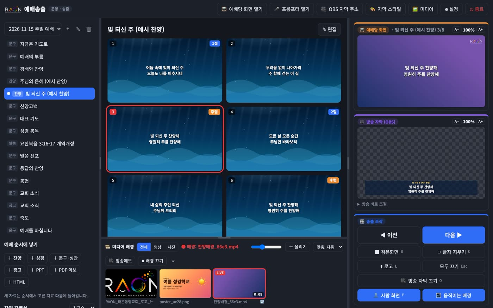
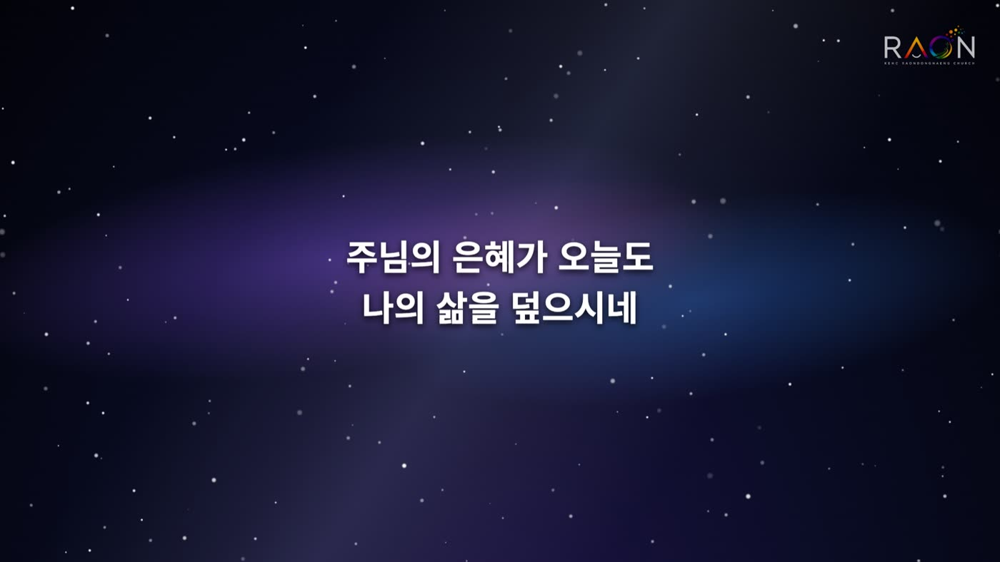
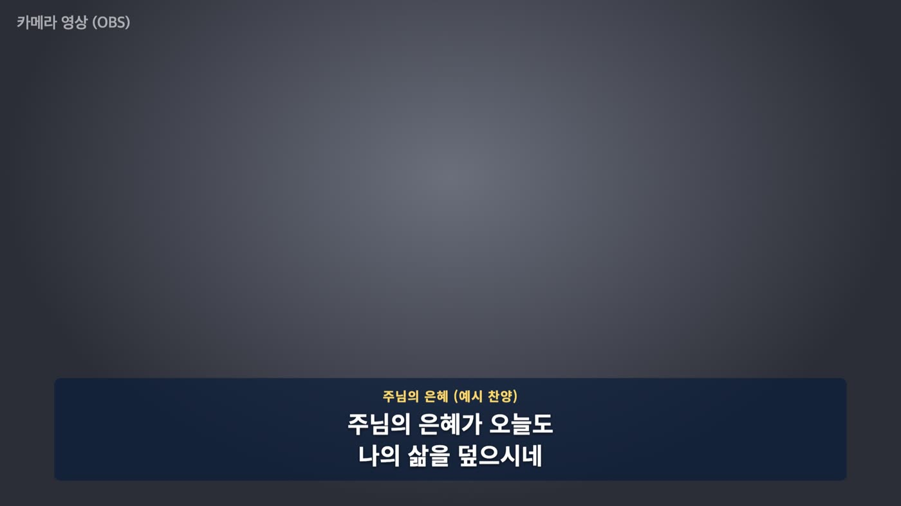
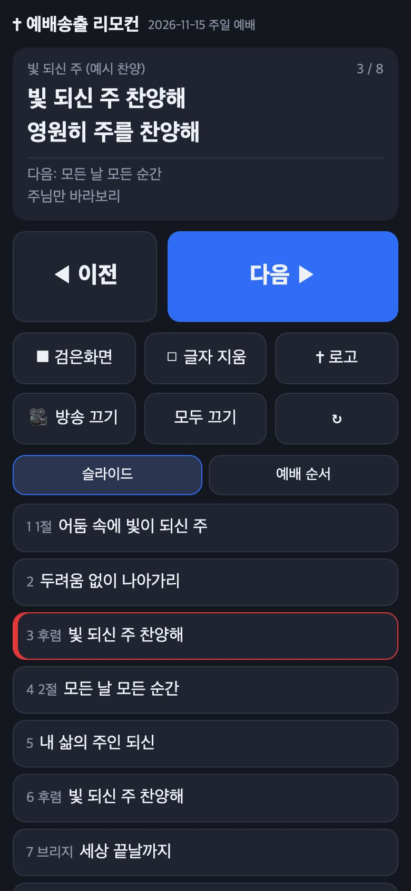
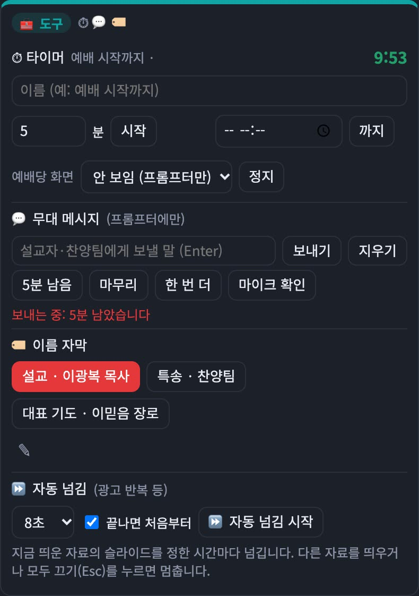

노트북 한 대로
예배 자막을 TV와 유튜브에
찬양 가사와 성경 말씀을 예배당 TV에 띄우고, 유튜브 생중계 화면에는 자막을 얹습니다. 작은 교회를 위해 만든 무료 프로그램입니다.
최신 버전 · 회원 가입 없이 무료
📱 휴대폰에서는 설치할 수 없습니다. 교회 노트북(맥·윈도우)에서 이 페이지를 열어 받으세요.

운영 화면 — 슬라이드를 누르면 바로 TV에 나갑니다
화면 세 개를 한 번에
노트북에서 넘기면 세 곳이 함께 바뀝니다.

📺 예배당 TV·프로젝터
HDMI 선 하나. 움직이는 배경, 교회 로고, 4:3 옛 프로젝터도 됩니다.

🎥 유튜브 생중계 자막
OBS에 주소 하나만 넣으면 카메라 화면 위에 자막 바가 얹힙니다. 캡처 장비가 필요 없습니다.

📱 휴대폰 리모컨 · 프롬프터
같은 와이파이의 휴대폰으로 넘기고, 설교자에게는 다음 슬라이드와 시계를 보여 줍니다.
할 수 있는 것
"어지간한 기능은 다 들어 있습니다."
- 🎵 찬양 가사곡 제목으로 가사를 찾아 바로 넣기, 2줄씩 자동 나누기, 1절·후렴 순서 정하기
- 📖 성경 말씀"요 3:16"만 치면 말씀 슬라이드. 두 번역 함께 보기
- 📋 콘티키·빠르기·메모를 적고 카톡으로 복사, 인쇄
- 🗂 예배 순서 템플릿주일·성찬·오후·수요·금요·새벽 예배 순서를 한 번에
- 🖼 PPT·PDF·악보·사진가져와서 바로 띄우기. 사진·악보는 유튜브에도
- 🎞 배경 영상직접 만든 반복 배경 영상 5개 포함, 내 영상도 배경으로
- ⏱ 도구예배 시작 카운트다운, 설교자 이름 자막, 광고 자동 넘김
- 💻 웹 편집기주중에 집 컴퓨터 브라우저에서 미리 준비 (PIN)
- 💾 백업·복원자료 전체를 파일 하나로, 새 컴퓨터로 옮기기
- 🔒 인터넷 없어도글꼴이 프로그램 안에 들어 있어 예배당 와이파이가 없어도 됩니다

준비물은 이것뿐
- 노트북 한 대 (맥 또는 윈도우 10·11)
- TV·프로젝터와 HDMI 선
- 유튜브 생중계를 한다면: OBS(무료)와 카메라
Node.js 같은 다른 프로그램을 따로 깔 필요가 없습니다. 받아서 압축을 풀면 끝입니다.
설치 방법
처음 한 번만 경고 창이 나옵니다. 유료 인증을 받지 않은 무료 프로그램이라 나오는 안내입니다.
🍎 맥
- 위의 맥용 받기를 누르고, 받은 zip 파일을 더블클릭해 압축을 풉니다.
- 예배송출.app을 응용 프로그램 폴더로 끌어다 놓습니다.
- 앱을 더블클릭합니다. "확인할 수 없습니다" 창이 뜨면 [완료].
- 시스템 설정 → 개인정보 보호 및 보안 맨 아래 "예배송출" 옆 [그래도 열기].
- 네트워크·방화벽 질문은 [허용] (유튜브 자막·웹 편집기에 필요).
🪟 윈도우
- 위의 윈도우용 받기를 누르고, 받은 zip 파일을 오른쪽 클릭 → 모두 압축 풀기.
- '예배송출' 폴더를 문서 폴더 같은 곳에 둡니다.
- 예배송출 실행.cmd를 더블클릭합니다.
- "Windows의 PC 보호" 창이 뜨면 [추가 정보] → [실행].
- 방화벽 질문은 [액세스 허용].
새 버전이 나오면 프로그램 안에 알림이 뜹니다. 같은 방법으로 받아 앱(폴더)만 바꾸면 자료는 그대로 남습니다.